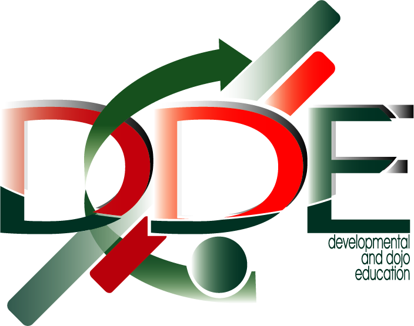
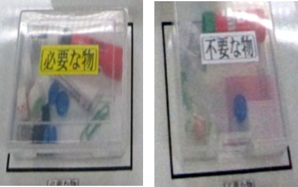
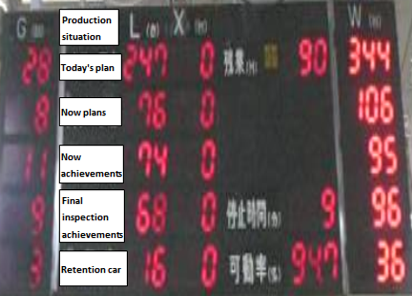
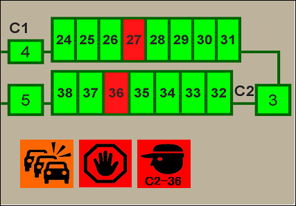

Asas Pengurusan Genba
Sistem untuk keadaan Sasaran Genba
(Toyota
Way)
Keadaan Sasaran Genba
Langkah-langkah untuk Pengurusan Abnormaliti
1Menjamin keadaan untuk pengeluaran
Menjamin keadaan untuk Kerja Standard (Manusia, Kaedah)
Perkara yang Perlu Direalisasikan
Perkara yang Perlu Dilakukan
Ringkasan
Menjamin Keadaan Standard (Bahan)
Perkara yang Perlu Direalisasikan
Perkara yang Perlu Dilakukan
Memeriksa keadaan 5S di Genba
5S ialah titik permulaan Pembuatan Produk (Monodzukuri)
Seiri
Seiton
Seiso
(Sisih)
(Susun)
(Suci)
3S
Seiketsu
(Seragam)
Shitsuke
(Mengekalkan)
Mewujudkan “5S” di Genba
5S ialah titik permulaan pembuatan di Daihatsu
Level of 5S understanding
- Pembersihan
- Seiri (Sisih), Seiton (Tetapkan mengikut susunan), Seisou (Suci), Seiketsu (Standardize), Shitsuke (Mengekalkan)
- Lima perkataan dan maknanya
- Abnormaiti bahan kelihatan
- Hapuskan abnormaliti, teruskan penambahbaikan (alat penambahbaikan)
- Ikut peraturan dan jadikan budaya(Shitsuke(Kekal)).
Seiri (Sisih)
Buang barang yang tidak perlu
Seiton (Tetapkan mengikut susunan)
Tentukan tempat yang mudah untuk menyimpan barang yang diperlukan

Seisou (Suci)
Pastikan kawasan kerja bebas kotoran dan bersih
Seiketsu (Standard)
Keep Seiri(Sorting), Seiton(Set in order) and Seisou(Shine)

Shitsuke (Mengekalkan)
Patuhi peraturan, Jadikan Budaya
Apa yang diperlukan diletakkan di tempatnya dengan petunjuk kuantiti maksimum dan minimum, dan First-In First-Out dilakukan.
Menjamin Keadaan Standard (Mesin)
Perkara yang Perlu Direalisasikan
Perkara yang Perlu Dilakukan
Penyelenggaraan Kendiri
Penyelenggaraan Diri yang Mampan dan Cekap (kajian kes)
Tugaskan kepada Ahli dan memberi arahan untuk melakukan penyelenggaraan kendiri.
TPM Activity Board

Self Maintenance Standard Sheet
Pengesanan Awal Abnormaliti
1Penyediaan Pengeluaran yang Selamat
Ambil Tindakan mengikut peraturan semasa Changing Point
Menjamin keupayaan proses: Menguruskan Change point
Apa itu changing point?
Perkara 4M (Man, Machine, Material and Method) Perubahan dalam aktiviti pengeluaran harian
Menguruskan Change point
Mengambil tindakan sebelum dan apabila CHANGING POINT
berlaku
untuk memastikan produk
yang
baik boleh dibuat walaupun changing point berlaku.
Steps Pengurusan Change Point ([1] to [3])
Alat perkongsian maklumat: Process Management Board
Alat perkongsian maklumat: Contoh Process Management Board

Ringkasan
(Keputusan oleh Pengurusan)
Maklumat
Kualiti/Kuantiti
Rekod
TM/TL mesti segera menghubungi Superior mereka jika keadaan luar biasa(abnormal).
Buat "Genba lebih sensitif terhadap
sebarang
Perubahan”
2Pengurusan Genba yang Stabil
Perkara yang Perlu Direalisasikan
Perkara yang Perlu Dilakukan
1
Perhatikan pematuhan Kerja oleh Team Member kepada Standardized
Work.
(Periksa Ketepatan Kerja, Masa dan Kebolehkesanan)
2
Pembangunan kemahiran
1 Pemerhatian kerja dan buat mereka patuhi
Perkara Ketika Pemerhatian Kerja
- Adakah Kemahiran Asas diperolehi?
- Adakah peraturan untuk Keselamatan dan Kualiti dipatuhi?
- Adakah kerja dilakukan mengikut prosedur yang ditetapkan?
- Adakah terdapat sebarang aktiviti rework?
- Adakah Operator melihat work point?
- Adakah point kritikal diperiksa?
- Adakah kerja dilakukan mengikut tact time?
- Adakah terdapat sebarang kerja yang disiapkan awal?
pengesanan
- Adakah kerja dilakukan mengikut tact time?
- Adakah terdapat sebarang kerja yang disiapkan awal?
Perhatikan sama ada kerja itu berasaskan pada WIS(Work Instruction Sheet) dan SOP(Standard Operation Procedure) atau tidak
Ringkasan
| Kedudukan | LE/TL (Team Leader) | GL, AM, Mgr |
|---|---|---|
| Sudut pandangan | Pematuhan SOP. | Memastikan Persekitaran Kondusif |
| Subjek dan Kekerapan | Semua team member 1 time/shift |
Proses Lemah
(Perubahan Pengurusan)
atau kemahiran)
GL:1 time/2 hours AM, MGR : 2 times/day |
| Langkah-langkah Khusus |
Tahap kerja (Kemahiran) tidak mencukupi.
Maklum balas kepada subjek & Latihan semula |
Ketahui abnormaliti Dalam Standard Work
Selesaikan Masalah, Termasuk TL |
Meningkatkan Persekitaran Kerja
Mewujudkan persekitaran yang dapat menilai sebarang proses yang tidak normal dengan segera
Segera menyelesaikan masalah yang dikenal
pasti semasa Pemerhatian Kerja melalui OJD
Perubahan”
Mengekalkan Keadaan Standardized Work
Perkara yang Perlu Direalisasikan
Perkara yang Perlu Dilakukan
1
Perhatikan pematuhan Kerja oleh Team Member kepada Standardized
Work.
(Periksa Ketepatan Kerja, Masa dan Kebolehkesanan)
2
Pembangunan kemahiran
2Pembangunan Kemahiran
Konsep Pembangunan Kemahiran
Garis Panduan untuk Skill Development
3 atau lebih orang/proses
Mungkin untuk bertindak semasa change point berlaku
3 atau lebih orang/proses (Sasaran akhir: Semua proses/orang)
Penyertaan aktif Pekerja Berkemahiran (peningkatan motivasi)
- Trainer (orang yang mengajar kerja)
- Proses kekurangan pekerja yang cekap
- Pekerja dengan bilangan proses yang tidak mencukupi
Ringkasan
Follow up kemajuan berdasarkan Pembangunan(training) Plan
(Pembangunan kemahiran tidak boleh dicapai tanpa
Pengurusan Genba Stabil).
Peranan Kakitangan Pengurusan/Penyeliaan
Mewujudkan persekitaran di mana Pembangunan(training) Perancangan boleh direalisasikan. (Bertindak balas terhadap sebarang gangguan untuk menjamin bilangan tenaga kerja dan lain-lain.)
Mengekalkan Keadaan untuk Standardized Work (material)
Perkara yang Perlu Direalisasikan
Perkara yang Perlu Dilakukan
Mengekalkan Keadaan 5S dalam Line
Mengekalkan Keadaan 5S dalam Line (Bahan)
Ringkasan
Peranan Pengurusan
Pembangunan Sumber Manusia melalui Penyelesaian Masalah (OJD)
Peluang disediakan oleh Kakitangan Pengurusan/ Penyeliaan
Melalui OJD, bukan sahaja untuk memahami "fenomena" tetapi juga mengamalkan “ 5 Whys ”
Pencegahan dan Penyeragaman Berulang (mewujudkan Persekitaran yang membolehkan Pematuhan kepada Peraturan)
Jangan berhenti dalam skop apa yang boleh dilakukan oleh orang bawahan sahaja, tetapi juga menentukan keperluan untuk penglibatan Kakitangan Pengurusan dan Penyeliaan.
2Pengurusan Genba yang Stabil
Sahkan sama ada Keupayaan Proses Dikekalkan atau tidak (Monitoring)
Visualisasi Progress daripada Production Volume: “Production Control Board”
Visualisasi Keadaan Operasi : Andon
Process Andon
Fahami Operasi dalam Line (Plan, Result)
Process Andon
Fahami Keadaan Operasi (Call, Stop, Buffer units)
Bertindak balas dengan segera kepada sebarang Abnormaliti
2Pengurusan Genba yang Stabil
1 Membuat pengkhususan polisi
Apa itu Polisi?
Mencapai Sasaran
Perkara semasa membuat polisi
Diklasifikasikan dalam lima tugas utama.
2 Visualisasikan dan Tetapkan Keutamaan Aktiviti

Genba Management Board
Apa itu Genba Management Board? (Dinilai secara relatif, secara bulanan)
Definisi setiap KPI
Board Aktiviti
Apa itu Board Aktiviti? (Penilaian Keputusan Harian berdasarkan Nilai Mutlak)
Orang yang bertanggungjawab (PIC)
--- Siapa?
Pelan Aktiviti
--- Sehingga bila?
PDCA Aktiviti
--- Bagaimana?
Keputusan Aktiviti
--- Berapa banyak?
Masalah dalam melaksanakan Aktiviti
--- Apa dan bagaimana?
Relationship with the Management Board
Pengenalan Kes : Board Kawalan Pengurusan Genba
Polisi Jabatan ~ digunakan pada Sasaran section
Making of KPI Tree? ( Main KPI )
Konsep tentang cara menurunkannya ke sub-KPI
Pada FY00, kami akan bekerja berdasarkan konsep "Tiada Kecacatan Dalam Proses" dan "Tiada Aliran Keluar Kecacatan Dalam Proses". Di sini, tumpuan adalah pada 'Tiada Kecacatan Dalam Proses' dan menerangkan tentang bagaimana untuk menurunkannya bagi mencapai KPI.
Making of KPI Tree? ( Sub KPI )
Making of KPI Tree? ( Sub KPI )
Bagaimana untuk merangka KPI? (KPI Proses ~ Aktiviti harian)
Pengenalan kes: Board Aktiviti
Untuk merangka rancangan aktiviti
Penyelesaian Masalah Harian
1
Bahagian: Visualisasi Butiran Aktiviti
Tahap pengurusan: Arahan dan Galakan untuk Aktiviti
2
Bahagian: Visualisasi Tugas dan Kebimbangan ( Check sheet Kenalpasti Masalah )
Tahap pengurusan: Tentukan Tindakan Balas (juga bertindak dan bekerjasama dengan aktiviti)

2Pengurusan Genba yang Stabil
Ringkasan
Hanya aktiviti Genba yang menghasilkan hasil.
3Penilaian Keputusan & Penyerahan informasi
Perkara yang Perlu Direalisasikan
Perkara yang Perlu Dilakukan
1
Mengekalkan keadaan 5S pada Genba (Part dan Peralatan)
2
Visualisasi Prestasi Operasi (Maklumat) Penyampaian komen mengenai titik perubahan
1Mengekalkan keadaan 5S pada Genba (Material dan Peralatan)
Menjamin keadaan untuk shif seterusnya bagi memulakan pengeluaran tanpa kegagalan atau kehilangan part = Pentingnya peranan diri sendiri

2Visualisasi Prestasi Operasi (Maklumat)
Pendekatan untuk Menyerahkan Mesej
Menjamin keadaan untuk shif seterusnya bagi memulakan pengeluaran tanpa kegagalan atau kehilangan part = Pentingnya peranan diri sendiri
Item Mesej Utama
3Penilaian Keputusan & Penyerahan informasi
Cara Menyerahkan kepada Syif Seterusnya
Mengesahkan dan mengisi nota untuk menyerahkan kepada syif seterusnya

Ringkasan
Perkara yang Perlu Direalisasikan:
Menjamin keadaan untuk shif seterusnya untuk melaksanakan pengeluaran dengan lancar